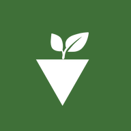
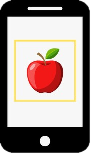
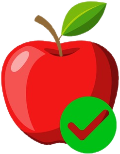
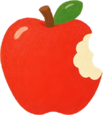

Fresh Food-

Fotografe
a fruta -

Ver
diagnóstico -

Pode
consumir?
Suas análises
O resultado é uma estimativa pela aparência da casca. Antes de comer, confira também o cheiro e se a fruta está firme.
Fruta detectada
Aguardando
Frescor
Aguardando
Certeza de que é a fruta
0%
Por que deu esse resultado
O sistema recorta a fruta, olha a cor de cada ponto da casca e um classificador transforma essas medidas na chance de ela estar estragada.
Confiabilidade da foto
Do que a casca é feita
Chance de estar estragada
O que mais pesou na decisão
Cada medida é comparada com a média das fotos usadas no treino. Quanto maior a barra, mais aquela medida pesou.
Dicas para uma boa foto
- Deixe a fruta inteira dentro da moldura
- Fotografe uma fruta por vez
- Prefira luz natural, sem sombra forte
- Use um fundo liso, como uma mesa ou um pano
- Segure o celular firme na hora de fotografar